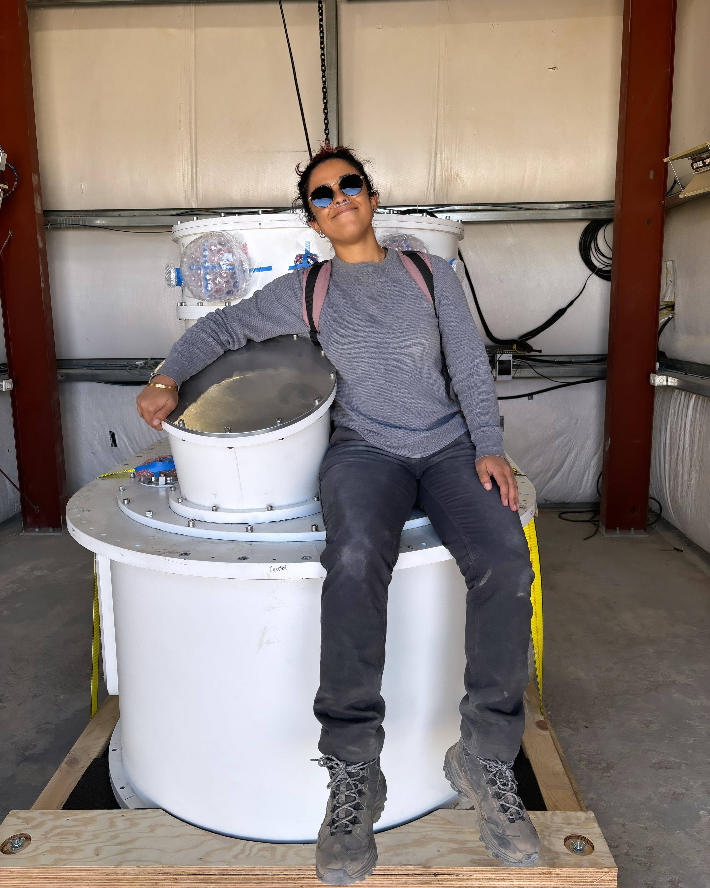

Grainger Postdoctoral Fellow · University of Chicago
I am an experimental physicist interested in using interdisciplinary techniques for cosmological applications. Currently I am primarily working on instrumentation and data analysis for the Simons Observatory, a cosmic microwave background (CMB) experiment located in the Atacama Desert in Chile. I have recently started dabbling in line intensity mapping (LIM), which uses multi-frequency spectral information to build a cross-sectional view of line-of-sight cosmic history. When I am not turning screws or grumbling at my computer, I can be found biking, kicking a soccer ball around, or watching terrible reality television.
background
PhD & MA, Physics, University of California, Berkeley
BSc, Electrical Engineering, California Institute of Technology
contact amangu@uchicago.edu
